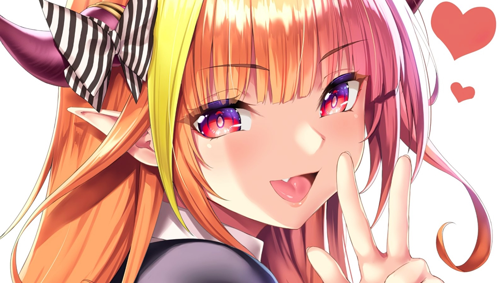

A história de como Naoto viciou em Hololive
Naotinho, em um certo dia, começou a conversar com Jun, o maioral. Ele ensinou a ele macetes para lembrar sobre os nomes do nervo ótico.
O primeiro de todos, era simples. Você tem 1 nariz, ou seja, Olfatório.
Segundo, você tem dois olhos, ou seja, Óptico!
Terceiro, o seu terceiro olho, ou seja, Oculomotor!
Quarto, você cai de 4, ou seja Troclear!
Quinto, em uma família de 5, temos um passivo, um ativo e trigêmeos, ou seja, Trigêmeo!
Sexto, abduziram 6 vacas, abduseis... Abducente!
Sétimo, 7 ao contrário? F! Facial!
Oitavo, 8 de lado são dois "o"s, Vestibulococlear!
Nono, 9 ao contrário? G! Glossofaringeo!
Décimo, no dia 10, você foi no cinema porque era um dia vago, Vago!
Décimo primeiro, 11 parecem dois brincos, Acessório!
Décimo segundo e último, dia 12 de outubro é o dia das crianças! Hipoglosso!
Depois dessa maravilhosa conversa, Jun ficou assustado e foi procurar por um gif demonstrando a ação de engolir.
Contudo, mal sabia Jun que digitar "gif engolindo", iria mostrar vários sites muito religiosos, o que assustou o pobre Jun.
Por causa disso, hoje, dia 27/06, comemoramos o dia em que Makotin virou para o Naoto e disse, me pega papai!
Coco, muito obrigado por tudo que você fez nesses último 1 ano e meio, você irá viver para sempre em nossos corações.